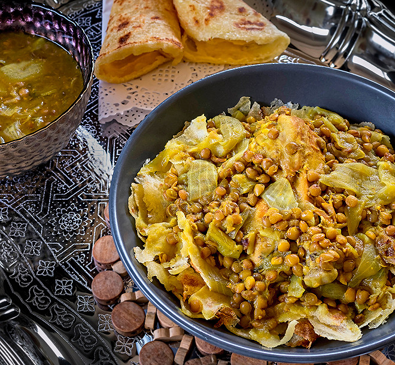

Rfissa recipe

What is rfissa?
Welcome, culinary explorers, to another delicious journey into the world of exotic flavors and tantalizing dishes! Today, we're venturing into the heart of Moroccan cuisine to discover the wonders of Rfissa, a dish that has been captivating taste buds for centuries. With its harmonious blend of flavors, textures, and aromatic spices, Rfissa is not only a culinary delight but a cultural experience that will transport you straight to the bustling streets of Morocco.
Rfissa is a traditional Moroccan dish that features tender, slow-cooked chicken or meat, nestled in a bed of steamed, shredded msemen or trid (Moroccan flatbread), and topped with a rich, fragrant sauce of lentils and spices. The true magic of Rfissa lies in the delicate balance of flavors, from the savory meat and the nutty lentils to the warmth of Ras el Hanout, a quintessential Moroccan spice blend. The dish is further elevated by the inviting aroma of saffron and fenugreek, both of which play a crucial role in achieving the authentic Rfissa experience.
But why should you make Rfissa? Firstly, it's an opportunity to broaden your culinary horizons and immerse yourself in the vibrant, diverse world of Moroccan cuisine. By preparing this dish, you'll be able to experiment with a variety of spices and techniques, which will not only enhance your skills in the kitchen but also inspire you to explore other international flavors.
Secondly, Rfissa is a dish that brings people together. It is typically enjoyed on special occasions, family gatherings, or celebrations, symbolizing togetherness and the warmth of Moroccan hospitality. When you make Rfissa, you're not just crafting a meal; you're creating a memorable experience that can be shared with your loved ones.
So, let's embark on this exciting culinary adventure together as I guide you through the intricacies of Rfissa, unveiling the secrets to its unique flavors, and providing you with step-by-step instructions to recreate this Moroccan masterpiece at home. Get ready to tantalize your taste buds and explore the vibrant world of Moroccan cuisine, one delicious bite at a time!
Ingredients
For the chicken or meat:
- 1 whole chicken, cut into pieces (or 2-3 lbs of beef or lamb, cut into chunks)
- 2 tablespoons vegetable oil
- 1 large onion, finely chopped
- 2 cloves garlic, minced
- 1 teaspoon ground ginger
- 1 teaspoon ground black pepper
- 1 teaspoon ground turmeric
- 1/2 teaspoon ground cinnamon
- 1 tablespoon Ras el Hanout (Moroccan spice blend)
- Salt, to taste
- 1 pinch saffron threads, soaked in warm water
- 1 bunch fresh cilantro, tied with a string
- 1 bunch fresh parsley, tied with a string
- 3 cups water or chicken broth
For the lentil sauce:
- 1 1/2 cups green or brown lentils, rinsed and drained
- 2 tablespoons vegetable oil
- 1 large onion, finely chopped
- 1 teaspoon ground ginger
- 1 teaspoon ground black pepper
- 1/2 teaspoon ground turmeric
- Salt, to taste
- 4 cups water or chicken broth
- 2 tablespoons fenugreek seeds, soaked in water for at least 2 hours (optional, but recommended for the authentic flavor)
For the msemen or trid (Moroccan flatbread):
- 8-10 pieces of msemen or trid, store-bought or homemade
To serve:
- Fresh cilantro or parsley, chopped (optional)
If you can't find msemen or trid, you can use any flatbread as a substitute, though the final dish will not be as authentic.
Steps to make Rfissa:
-
Cook the chicken or meat:
- In a large pot or Dutch oven, heat the vegetable oil over medium heat.
- Add the chopped onion and cook until softened, about 5 minutes.
- Add the garlic, ginger, black pepper, turmeric, cinnamon, Ras el Hanout, and salt. Cook for another 2 minutes, stirring constantly.
- Add the chicken or meat pieces to the pot, coating them with the spice mixture.
- Add the saffron threads with their soaking water, fresh cilantro, fresh parsley, and water or chicken broth. Bring to a boil, then reduce heat, cover, and simmer for about 1 hour, or until the meat is tender.
-
Prepare the lentil sauce:
- In a separate pot, heat the vegetable oil over medium heat.
- Add the chopped onion and cook until softened, about 5 minutes.
- Add the ginger, black pepper, turmeric, and salt. Cook for another 2 minutes, stirring constantly.
- Add the lentils and water or chicken broth. Bring to a boil, then reduce heat, cover, and simmer for about 30-40 minutes, or until the lentils are tender.
- If using fenugreek seeds, add the soaked seeds (without the soaking water) to the lentil sauce about halfway through the cooking time.
-
Steam the msemen or trid (Moroccan flatbread):
- If using store-bought msemen or trid, steam them in a steamer basket or bamboo steamer for about 5-10 minutes, or until they are soft and warm.
- If using homemade msemen or trid, follow the recipe instructions for cooking and steaming them.
-
Assemble the Rfissa:
- In a large serving dish or platter, arrange the steamed msemen or trid as the base.
- Remove the chicken or meat from the pot and place it on top of the msemen or trid.
- Remove the cilantro and parsley bunches from the pot and discard.
- Pour some of the cooking liquid from the chicken or meat pot over the msemen or trid to moisten it.
- Pour the lentil sauce over the chicken or meat, making sure to distribute it evenly.
-
Garnish and serve:
- Sprinkle chopped fresh cilantro or parsley over the Rfissa, if desired.
- Serve the Rfissa hot, accompanied by additional chicken or meat cooking liquid on the side, which can be used to moisten the dish as needed.
Scroll to the top of the page